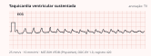

Cardiologia · 77 min · ESC 2022 · monografia
Arritmias ventriculares e prevenção de morte súbita
Passada a emergência, o trabalho que salva mais vidas não é o antiarrítmico: é identificar o substrato, decidir quem se beneficia de cardiodesfibrilador e rastrear a família. A ESC 2022 reorganizou esse capítulo em torno de duas ideias — a fração de ejeção deixou de ser o único marcador de risco, e a ressonância com realce tardio entrou na estratificação — e trouxe recomendações explícitas para doenças que o clínico brasileiro vê todo dia, incluindo a cardiomiopatia chagásica.
1. O vocabulário que a diretriz padroniza
A morte súbita responde por cerca de 50% das mortes cardiovasculares e, em até metade dos casos, é a primeira manifestação da doença cardíaca. A doença coronariana responde por 75% a 80% do total, mas abaixo dos 50 anos as doenças elétricas primárias, as cardiomiopatias e a miocardite podem responder por mais da metade dos casos — e é por isso que a investigação muda tanto com a idade do paciente.
A ESC 2022 abre fixando definições, e vale começar por elas porque cada palavra corresponde a uma conduta diferente. TV incessante, que não está na tabela, é a TV sustentada contínua que recorre prontamente apesar de intervenções repetidas ao longo de horas.
| Termo | Definição da diretriz |
|---|---|
| Extrassístole ventricular | QRS prematuro anômalo, ≥120 ms, T larga e oposta à deflexão principal, sem P precedente. Curto acoplamento quando interrompe a T do batimento anterior |
| Taquicardia ventricular | ≥3 batimentos consecutivos acima de 100 bpm de origem ventricular. Não sustentada: de 3 batimentos a 30 s. Sustentada: ≥30 s ou que exija intervenção para terminar |
| Bidirecional e torsades | Bidirecional: alternância do eixo frontal do QRS batimento a batimento — TV catecolaminérgica, Andersen-Tawil, intoxicação digitálica, miocardite. Torsades: polimórfica no contexto de QT prolongado, girando em torno da linha de base |
| Tempestade elétrica | ≥3 episódios em 24 h, separados por ao menos 5 minutos, cada um exigindo intervenção para terminar |
| Morte súbita cardíaca | Morte natural presumidamente cardíaca em até 1 h do início dos sintomas se testemunhada, ou em até 24 h do último momento em que a pessoa foi vista viva |
| Síncope arrítmica | Síncope suspeita de bradicardia intermitente, taquicardia supraventricular rápida ou arritmia ventricular — categoria que muda a indicação de dispositivo em quase todas as doenças deste texto |
2. Extrassístoles ventriculares e quando investigar
Extrassístoles e TV em paciente sem cardiopatia estrutural são chamadas idiopáticas. A avaliação de primeira linha é ECG de 12 derivações, registro da arritmia em 12 derivações e ecocardiograma (I C); o Holter de 24 h quantifica a carga, e a ressonância entra (IIa B) quando ECG e ecocardiograma são inconclusivos ou a apresentação é atípica — idade mais avançada, morfologia de bloqueio de ramo direito, TV monomórfica com cara de reentrada. Achado incidental de TV não sustentada pede Holter de 24 h ou mais (IIa C): em coração normal ela costuma ter bom prognóstico, mas na cardiopatia estrutural entra na estratificação de risco — na hipertrófica é um dos itens do escore, e na coronariopatia com fração ≤40% é ela que indica o estudo eletrofisiológico.

Quando tratar, a escolha depende da origem e da função. No sintomático com função normal, a ablação é classe I nas extrassístoles e TV da via de saída do ventrículo direito e das vias fasciculares esquerdas; para focos de outra origem, a primeira linha é β-bloqueador ou bloqueador de cálcio (I), com ablação como IIa. A flecainida é IIa nos dois cenários e a amiodarona é classe III aqui.
| Miocardiopatia induzida ou agravada por extrassístoles — ESC 2022 | Classe |
|---|---|
| Considerar o diagnóstico com fração de ejeção reduzida inexplicada e carga de ao menos 10% | IIaC |
| Ressonância cardíaca na suspeita | IIaB |
| Ablação por cateter quando a cardiomiopatia é atribuída a extrassístoles frequentes e predominantemente monomórficas | IC |
| Antiarrítmico se a ablação não for desejada, for de alto risco ou tiver falhado — flecainida só com dispositivo implantado ou disfunção moderada | IIaC |
| Na cardiopatia estrutural em que extrassístoles monomórficas frequentes contribuem para a disfunção, e no não respondedor à ressincronização cuja estimulação biventricular elas limitam: amiodarona ou ablação | IIaB |
Qual é o diagnóstico e o que fazer
Carga acima de 10% com fração reduzida inexplicada e extrassístoles predominantemente monomórficas configuram miocardiopatia induzida por extrassístoles (IIa C para o diagnóstico). O padrão descrito é de via de saída do ventrículo direito. Ressonância é IIa B, e a ablação por cateter é classe I C — o quadro é reversível. Amiodarona aqui seria erro de primeira escolha.Para dar a medida do benefício: num estudo, a flecainida reduziu a carga de 36% para 10% e a fração subiu de 37% para 49% — lembrando que ela aumentou mortalidade em pacientes pós-infarto.
3. TV sustentada e tempestade elétrica: manejo agudo
A primeira decisão é hemodinâmica. Se a TV não é tolerada, cardioversão sincronizada imediata — e choque não sincronizado se a sincronização não for possível. Se é tolerada, a cardioversão continua sendo primeira linha, desde que o risco anestésico seja baixo: a deterioração pode ser abrupta. Registrar o traçado de 12 derivações antes de reverter vale ouro para o seguimento.

| TV sustentada e tempestade elétrica — ESC 2022 | Classe |
|---|---|
| Cardioversão elétrica como primeira linha na TV monomórfica sustentada não tolerada | IB |
| Cardioversão elétrica como primeira linha na TV monomórfica tolerada, se o risco anestésico for baixo | IC |
| TV idiopática tolerada: β-bloqueador IV na de via de saída do ventrículo direito, verapamil IV na fascicular | IC |
| TV monomórfica tolerada com cardiopatia estrutural conhecida ou suspeita: procainamida IV | IIaB |
| QRS largo regular tolerado com suspeita de supraventricular: adenosina ou manobras vagais com registro contínuo de 12 derivações (IIa C). Sem diagnóstico estabelecido: amiodarona IV | IIbB |
| Verapamil IV não é recomendado na taquicardia de QRS largo de mecanismo desconhecido | IIIB |
| Tempestade: sedação leve a moderada, para aliviar o sofrimento e reduzir o tônus simpático | IC |
| Tempestade com cardiopatia estrutural: β-bloqueador não seletivo com amiodarona IV | IB |
| Torsades: magnésio IV com reposição de potássio. No QT longo adquirido com recorrência apesar do magnésio e da correção dos precipitantes: isoproterenol ou estimulação transvenosa | IC |
| Ablação na TV incessante ou na tempestade por TV monomórfica refratária a antiarrítmico | IB |
| Sedação profunda com intubação na tempestade intratável; ablação nas recorrências de TV polimórfica ou fibrilação ventricular deflagradas por uma mesma extrassístole | IIaC |
| Quinidina na tempestade por TV polimórfica recorrente da doença coronariana; modulação autonômica e suporte circulatório mecânico na tempestade refratária com choque | IIbC |
Na tempestade, a lógica é subtrair adrenalina do sistema: a sedação não é conforto, reduz o tônus simpático e por si só costuma diminuir os eventos; corrigir potássio e magnésio e procurar isquemia vêm junto.
flowchart TD
A["Taquicardia regular de QRS largo"] --> B{"Hemodinamicamente tolerada?"}
B -->|"não"| C["Cardioversão · desfibrilação · suporte avançado — classe I"]
B -->|"sim"| D["História · exame · ECG de 12 derivações"]
D --> E{"Cardiopatia estrutural conhecida ou suspeita?"}
E -->|"não"| F{"TV idiopática reconhecível?"}
F -->|"fascicular"| G["Verapamil IV — classe I"]
F -->|"via de saída"| H["β-bloqueador IV — classe I"]
F -->|"outra ou incerta"| I["Procainamida IIa
Flecainida · ajmalina · sotalol · amiodarona IIb"]
E -->|"sim"| J["Procainamida IV — IIa
Amiodarona IV — IIb"]
D --> K{"Suspeita de supraventricular?"}
K -->|"sim"| L["Adenosina ou manobra vagal com registro contínuo — IIa
Se rápida, larga e irregular: pensar em FA pré-excitada e NÃO bloquear o nó"]
4. Substrato isquêmico
Quarenta dias depois de um infarto com supradesnivelamento, cerca de 5% dos pacientes terão fração ≤35% — o grupo em que o dispositivo demonstrou benefício. A fração é avaliada antes da alta, e a reavaliação 6 a 12 semanas depois é o passo que decide a indicação.
| Doença coronariana crônica — ESC 2022 | Classe |
|---|---|
| Estudo eletrofisiológico programado em quem teve infarto e mantém síncope inexplicada após avaliação não invasiva | IC |
| Prevenção primária: cardiodesfibrilador com classe funcional II–III e fração ≤35% apesar de ≥3 meses de terapia otimizada | IA |
| Prevenção primária: classe funcional I com fração ≤30% apesar de ≥3 meses de terapia otimizada | IIaB |
| Prevenção primária: fração ≤40% com TV não sustentada, se houver TV monomórfica sustentada induzível ao estudo eletrofisiológico | IIaB |
| Antiarrítmico profilático que não seja β-bloqueador não é recomendado | IIIA |
| Prevenção secundária: implante após fibrilação ventricular ou TV não tolerada ocorrida mais de 48 h depois do infarto, sem isquemia em curso | IA |
| Ablação preferida ao escalonamento de antiarrítmico em quem tem TV monomórfica recorrente ou choques apesar de amiodarona crônica | IB |
| TV monomórfica bem tolerada com fração ≥40%: ablação em centro experiente como alternativa ao dispositivo, desde que atingidos os alvos do procedimento | IIaC |
Os três ensaios pivotais de prevenção secundária (AVID, CASH, CIDS) somaram 1.866 pacientes, cerca de 80% com doença coronariana, e a metanálise por paciente mostrou redução de 28% na mortalidade, quase inteiramente por queda de 50% na morte arrítmica. Pacientes com TV monomórfica bem tolerada foram excluídos desses ensaios — daí a recomendação IIa de tratar esse grupo com ablação em vez de dispositivo quando a fração é ≥40%.
Cabe implantar?
Não. A recomendação de prevenção secundária vale para arritmia ocorrida mais de 48 h após o infarto e sem isquemia em curso — esta foi na fase aguda, com causa corrigida. E o implante profilático nos primeiros 40 dias não reduz mortalidade (DINAMIT, IRIS). A conduta é terapia otimizada e reavaliar a fração 6 a 12 semanas depois; se ficar ≤35% com classe funcional II–III após ≥3 meses, aí sim está indicado.flowchart TD A["Doença coronariana crônica"] --> B["Reavaliar fração de ejeção 6 a 12 semanas após o infarto
em quem teve fração ≤ 40% na alta — classe I"] B --> C{"Fração após 3 meses de terapia otimizada"} C -->|"≤ 35% com classe funcional II ou III"| D["Cardiodesfibrilador — classe I"] C -->|"≤ 30% com classe funcional I"| E["Cardiodesfibrilador — IIa"] C -->|"36 a 40%"| F{"TV não sustentada ou síncope inexplicada?"} F -->|"não"| G["Seguimento"] F -->|"sim"| H["Estudo eletrofisiológico programado — classe I"] H -->|"TV monomórfica sustentada induzível"| I["Cardiodesfibrilador — IIa"] H -->|"não induzível e síncope inexplicada"| J["Monitor de eventos implantável"]
5. Cardiomiopatias dilatada, hipertrófica e arritmogênica
Dilatada e hipocinética não dilatada
Mutações patogênicas aparecem em 25% a 55% dos pacientes; truncamentos da titina são os mais frequentes, seguidos de LMNA, sarcoméricos e desmossômicos. Os genes que aumentam risco arrítmico são LMNA, PLN, RBM20 e FLNC, e portadores de variantes desmossômicas e de LMNA tiveram a maior taxa de arritmia e morte súbita independentemente da fração de ejeção. O teste genético incluindo esses genes é classe I B em quem tem atraso de condução atrioventricular antes dos 50 anos ou história familiar de cardiomiopatia ou morte súbita em parente de primeiro grau abaixo dos 50 anos.
A ressonância com realce tardio é IIa B para etiologia e risco: numa metanálise de 29 estudos com 2.948 pacientes, o realce associou-se ao desfecho arrítmico com razão de risco de 6,7, persistindo com fração média acima de 35%; num estudo de 1.020 pacientes, só o realce se associou à morte súbita.
| Cardiomiopatia dilatada e hipocinética não dilatada — ESC 2022 | Classe |
|---|---|
| Cardiodesfibrilador com classe funcional II–III e fração ≤35% após ≥3 meses de terapia otimizada | IIaA |
| Cardiodesfibrilador em portador de mutação em LMNA com risco estimado de arritmia grave em 5 anos ≥10%, na presença de TV não sustentada, fração <50% ou atraso de condução atrioventricular | IIaB |
| Cardiodesfibrilador com fração <50% e ≥2 fatores de risco — síncope, realce tardio, TV monomórfica induzível, mutação em LMNA, PLN, FLNC ou RBM20 | IIaC |
| Cardiodesfibrilador em prevenção secundária, após parada por TV ou fibrilação ventricular, ou TV não tolerada | IB |
| Exercício de alta intensidade e esporte competitivo não são recomendados em portador de mutação em LMNA | IIIC |
Hipertrófica
Prevalência de cerca de 1 em 500 adultos e taxa anual de morte súbita ou terapia apropriada do dispositivo em torno de 0,8%; TV não sustentada aparece em 20% a 25% dos Holters, com valor prognóstico maior abaixo dos 30 anos. A recomendação estrutural é calcular o risco em 5 anos pelo HCM Risk-SCD na primeira avaliação e a cada 1 a 3 anos (I C).
| Risco em 5 anos | Conduta na ESC 2022 |
|---|---|
| ≥6% | Cardiodesfibrilador deve ser considerado — IIa B |
| ≥4% e <6% com um modificador: realce significativo (em geral ≥15% da massa), fração <50%, resposta pressórica anormal ao esforço, aneurisma apical ou mutação sarcomérica | Deve ser considerado — IIa B. Sem modificador, ou com risco <4% mas realce significativo, fração <50% ou aneurisma apical: pode ser considerado — IIb B |
| Parada abortada ou TV não tolerada | Recomendado — classe I B |
Nenhum fármaco demonstrou reduzir morte súbita na hipertrófica: disopiramida e β-bloqueador controlam sintomas e obstrução, e miectomia ou ablação alcoólica não são indicadas para reduzir risco arrítmico. Abaixo dos 16 anos vale o HCM Risk-Kids, com implante indicado (IIa B) a partir de 6% em 5 anos.
Arritmogênica de ventrículo direito
O diagnóstico segue os critérios internacionais revistos de 2010, multiparamétricos; a caracterização tecidual por ressonância não fazia parte deles, mas a infiltração gordurosa do ventrículo direito e o realce do esquerdo mudaram a leitura da doença. Ressonância na suspeita e teste genético são classe I B, e evitar exercício de alta intensidade é classe I B no diagnóstico definido. O cardiodesfibrilador deve ser considerado (IIa) diante de síncope arrítmica, de disfunção sistólica grave de qualquer ventrículo, e no sintomático com disfunção moderada somada a outros fatores — cicatriz extensa à ressonância, QRS ≥180 ms, fragmentação grave do QRS, TV não sustentada ou TV monomórfica induzível.
6. Miocardite, sarcoidose e Chagas
Na miocardite, o cardiodesfibrilador é recomendado (IIa) quando ocorre TV monomórfica sustentada não tolerada na fase crônica — a distinção entre fase aguda e crônica separa a arritmia transitória da arritmia por cicatriz estabelecida. A sarcoidose cardíaca se manifesta por disfunção ventricular esquerda, distúrbio de condução e arritmia ventricular: o bloqueio total costuma aparecer na fase inflamatória aguda, enquanto a TV sustentada surge na doença avançada. Três fatores se associam a desfecho adverso: fração abaixo de 35%, bloqueio de alto grau documentado e cicatriz de ventrículo direito ou esquerdo à ressonância.
| Sarcoidose cardíaca — ESC 2022 | Classe |
|---|---|
| Cardiodesfibrilador com fração ≤35%, ou após TV sustentada documentada ou parada abortada | IB |
| Cardiodesfibrilador quando há indicação de marcapasso definitivo por bloqueio de alto grau, independentemente da fração | IIaC |
| Cardiodesfibrilador com fração >35% mas realce tardio significativo, após resolução da inflamação aguda | IIaB |
| Estudo eletrofisiológico com fração de 35% a 50% e realce discreto, após resolução da inflamação, implantando se houver TV monomórfica induzível; antiarrítmico na arritmia sintomática recorrente e ablação em centro especializado nos choques refratários | IIaC |
7. Canalopatias
Síndrome do QT longo
Idade média de apresentação de 14 anos; a taxa anual de morte súbita no assintomático não tratado é estimada em menos de 0,5%, subindo para cerca de 5% em quem já teve síncope. Os genes incontestáveis são KCNQ1 (LQT1), KCNH2 (LQT2) e SCN5A (LQT3), que respondem por 90% dos genótipos positivos. Os gatilhos são específicos de genótipo e caem em prova: esforço e natação no LQT1, emoção e som súbito no LQT2, sono no LQT3. Diagnóstico com QTc ≥480 ms em ECG repetidos ou escore >3 (I C), ou pela presença de mutação patogênica qualquer que seja a duração do QT (I C); QTc entre 460 e 480 ms com síncope arrítmica e sem causa secundária permite considerar o diagnóstico (IIa C).
O tratamento tem três camadas. Para todos: evitar hipocalemia, fármacos que prolongam o QT e os gatilhos do genótipo. Depois, o β-bloqueador não seletivo — nadolol ou propranolol —, classe I B em quem tem QT prolongado e IIa B mesmo com QTc normal quando há mutação patogênica. Por fim, a terapia genótipo-específica: mexiletina é classe I C no LQT3. O cardiodesfibrilador é classe I após parada cardíaca e em quem permanece sintomático sob β-bloqueador e terapia genótipo-específica; a denervação simpática cardíaca esquerda é I C quando o dispositivo é contraindicado ou recusado, ou quando há choques múltiplos apesar do tratamento pleno. O estudo eletrofisiológico é classe III.

Síndrome de Brugada
Diagnóstico (I C) em paciente sem outra cardiopatia com padrão tipo 1 espontâneo, ou em quem sobreviveu a parada por fibrilação ventricular ou TV polimórfica e exibe padrão tipo 1 induzido por bloqueador de canal de sódio ou durante febre. Padrão tipo 1 apenas induzido não basta sozinho: é IIa C se houver síncope arrítmica, respiração agônica noturna, história familiar da síndrome ou de morte súbita antes dos 45 anos com autópsia negativa; e IIb C sem nenhum desses. Fazer teste com bloqueador de sódio em quem já teve padrão tipo 1 é classe III.
Para todos, classe I C: evitar fármacos que induzem supradesnivelamento nas precordiais direitas, evitar cocaína, cannabis e excesso de álcool, e tratar a febre com antitérmico. O cardiodesfibrilador é I C em sobrevivente de parada e em quem tem TV sustentada espontânea, e IIa C na síncope arrítmica com padrão tipo 1. Monitor implantável é IIa C na síncope inexplicada; quinidina é IIa C em quem tem indicação de dispositivo mas contraindicação, recusa ou choques recorrentes; isoproterenol é IIa C na tempestade.
TV polimórfica catecolaminérgica
Diagnóstico (I C) em paciente com coração estruturalmente normal, ECG normal e TV bidirecional ou polimórfica induzida por esforço ou emoção, ou em portador de mutação causadora; aconselhamento e teste genético são I C. O tratamento começa por uma recomendação de estilo de vida que é classe I C: evitar esporte competitivo, exercício extenuante e ambientes estressantes. β-bloqueador não seletivo é classe I C para todos com diagnóstico clínico, e IIa C nos geneticamente positivos sem fenótipo. O cardiodesfibrilador com β-bloqueador e flecainida é classe I C após parada abortada; a flecainida é IIa C em quem mantém síncope, TV ou extrassistolia ao esforço sob dose máxima; a denervação simpática esquerda é IIa C quando essa combinação falha. O estudo eletrofisiológico é classe III.
Conduta imediata e depois
Torsades de pointes por QT longo adquirido. Imediato: sulfato de magnésio IV com reposição de potássio (I C) e suspensão dos agentes causadores (I B). Se recorre apesar disso, isoproterenol ou estimulação transvenosa para elevar a frequência (I C) — a bradicardia e a pausa pós-extrassistólica são o gatilho. Depois: revisar toda a prescrição, corrigir magnésio, e considerar avaliação de QT longo congênito se o QT não normalizar.Síndrome do QT curto
Doença rara, com fibrilação atrial precoce e fibrilação ventricular em coração normal. Diagnóstico (I C) com QTc ≤360 ms mais um de: mutação patogênica, história familiar da síndrome, ou sobrevivência a TV ou fibrilação ventricular sem cardiopatia; QTc ≤320 ms isolado permite considerar o diagnóstico (IIa C), assim como QTc entre 320 e 360 ms com síncope arrítmica. A letalidade é alta em todas as idades: a probabilidade de uma primeira parada até os 40 anos passa de 40%. O cardiodesfibrilador é I C em prevenção secundária e IIa C na síncope arrítmica; a quinidina é o antiarrítmico mais bem sustentado (IIb C).
8. Cardiodesfibrilador: princípios gerais
| Princípios que valem para qualquer indicação — ESC 2022 | Classe |
|---|---|
| Implante apenas em quem tem expectativa de sobrevida com boa qualidade superior a 1 ano | IC |
| Não implantar enquanto a arritmia ventricular estiver incessante — controlar primeiro | IIIC |
| Prevenção secundária: implante após fibrilação ventricular ou TV não tolerada sem causa reversível | IA |
| Dispositivo subcutâneo como alternativa ao transvenoso quando não são necessários marcapasso antibradicardia, ressincronização nem estimulação antitaquicardia — e avaliar sempre se o paciente se beneficiaria de ressincronização com desfibrilador (I C) | IIaB |
| Dispositivo de câmara única em prevenção primária sem indicação de estimulação atrial ou sequencial; programação com detecção prolongada (ao menos 6 a 12 s ou 30 intervalos), zona mais lenta de terapia ≥188 bpm na prevenção primária e ao menos uma terapia antitaquicardia em todas as zonas na cardiopatia estrutural | IA |
Os exames que sustentam essas decisões, em uma frase cada. A ressonância com realce tardio virou instrumento de estratificação — é ela que eleva a indicação na dilatada, na hipertrófica de risco intermediário e na sarcoidose com fração acima de 35%. O estudo eletrofisiológico é classe I na síncope inexplicada pós-infarto e classe III no QT longo, no QT curto e na TV catecolaminérgica. E a ablação é curativa nas idiopáticas, de resgate na TV incessante e redutora de carga na cardiopatia crônica — com resultado pior na dilatada (sobrevida livre de TV em 1 ano de 40,5% contra 57%) e acesso epicárdico em 27% a 30% dos procedimentos.
9. Sobrevivente de parada e rastreio familiar
A investigação do sobrevivente de parada sem causa extracardíaca óbvia deve ser conduzida por equipe multidisciplinar (I B). Coronariografia é indicada (I C) quando há instabilidade elétrica com suspeita de isquemia em curso — a coronariografia precoce na parada sem supradesnivelamento não trouxe benefício nos ensaios randomizados.
| Avaliação do sobrevivente de parada — ESC 2022 | Classe |
|---|---|
| Colher amostras de sangue na admissão para toxicologia e teste genético, e recuperar registros de dispositivos e monitores vestíveis | IB |
| ECG de 12 derivações repetidos em ritmo estável, incluindo precordiais altas, e monitorização contínua | IB |
| Ecocardiograma em todos | IC |
| Imagem coronariana e ressonância com realce tardio em todos os que ficam sem causa clara | IB |
| Teste com bloqueador de canal de sódio e teste ergométrico nos que ficam sem causa clara | IB |
| Tomografia de crânio e tórax quando quadro, ECG e ecocardiograma não sugerem causa cardíaca (IIa C); testes de ergonovina, acetilcolina ou hiperventilação para espasmo coronariano | IIbB |
Quando a vítima morre, o trabalho não acaba. A autópsia completa é recomendada em toda morte súbita inesperada e sempre abaixo dos 50 anos (I B), com descrição das circunstâncias, dos sintomas prévios e da história familiar. Guardar amostras para DNA e consultar patologista cardíaco é I B, assim como a triagem toxicológica. Doença geneticamente determinada é identificada em 25% a 49% dos casos, e o teste post mortem acha mutação em cerca de um terço.
flowchart TD
A["Morte súbita inexplicada"] --> B{"Houve autópsia?"}
B -->|"não"| C["Avaliar a família se o falecido era jovem
ou se história e circunstâncias sugerem doença hereditária"]
B -->|"sim, sem causa estrutural"| D{"Teste genético post mortem"}
D -->|"mutação patogênica identificada"| E["Avaliação familiar dirigida à condição
+ teste genético em cascata — classe I"]
D -->|"negativo ou não realizado"| F["Avaliação clínica de parentes de primeiro grau
e de quem tem sintomas suspeitos — classe I"]
C --> F
F --> G["História · exame · ECG padrão e com precordiais altas
Ecocardiograma · teste ergométrico"]
G --> H{"Diagnóstico?"}
H -->|"sim"| I["Tratar conforme a doença identificada"]
H -->|"não"| J["Teste com bloqueador de sódio se houver suspeita de Brugada — IIa
Seguir os filhos do falecido até a idade adulta — classe I"]
10. Armadilhas consolidadas
- Cardioverter salvas repetitivas de TV não sustentada. A cardioversão não está indicada aí — o alvo é o gatilho, não o episódio.
- Verapamil numa taquicardia de QRS largo de mecanismo desconhecido — classe III B.
- Chamar de tempestade elétrica o que não é. Exige três episódios em 24 h, separados por 5 minutos, cada um exigindo intervenção.
- Implantar em quem tem sobrevida esperada com qualidade inferior a 1 ano, ou enquanto a arritmia ainda está incessante — as duas situações têm recomendação explícita contra.
- Bloquear o nó numa taquicardia rápida, larga e irregular. Fibrilação atrial pré-excitada imita TV; adenosina, β-bloqueadores e amiodarona devem ser evitados.
- Esquecer o magnésio na torsades, ou parar nele quando o episódio recorre: aí entram isoproterenol ou estimulação para elevar a frequência.
- Implantar cardiodesfibrilador nos primeiros 40 dias pós-infarto — DINAMIT e IRIS mostraram ausência de benefício e o colete não preencheu a lacuna (VEST negativo) —, ou indicar prevenção primária sem reavaliar a fração após ao menos 3 meses de terapia otimizada.
- Tratar a fração de ejeção como único marcador de risco, ou rotular como vasovagal a síncope do esforço. Realce tardio, genótipo, síncope inexplicada e indutibilidade mudam a indicação na dilatada, na hipertrófica, na arritmogênica e na sarcoidose.
- Não tratar a febre agressivamente na síndrome de Brugada — é classe I C, ao lado de evitar cocaína, cannabis e álcool em excesso.
- Prescrever β-bloqueador cardiosseletivo no QT longo ou na TV catecolaminérgica. A diretriz pede os não seletivos: nadolol ou propranolol.
- Ignorar carga alta de extrassístoles como causa reversível de disfunção: a partir de 10% se considera miocardiopatia induzida, e a ablação é classe I quando são predominantemente monomórficas.
- Presumir que o cardiodesfibrilador se comporta na doença de Chagas como nas outras cardiopatias. A evidência não mostrou vantagem sobre a amiodarona e a taxa de choques inapropriados é alta — o dispositivo é apenas IIb C.
- Não guardar sangue e não pedir autópsia na morte súbita do jovem: sem material para DNA e sem laudo, a família perde o diagnóstico que a protegeria.
11. Autoteste
1. Defina tempestade elétrica e TV incessante.
Tempestade: três ou mais episódios em 24 h, separados por ao menos 5 minutos, cada um exigindo intervenção. Incessante: TV sustentada contínua que recorre prontamente apesar de intervenções repetidas ao longo de horas.
2. Qual carga de extrassístoles preocupa, e o que fazer com ela?
O limiar mínimo para miocardiopatia induzida é cerca de 10% em 24 h, com risco maior acima de 20%. Com fração reduzida inexplicada e carga ≥10%: considerar o diagnóstico (IIa C), pedir ressonância (IIa B) e indicar ablação se as extrassístoles são predominantemente monomórficas (I C).
3. Paciente estável com TV monomórfica sustentada e infarto prévio. Primeira linha?
Cardioversão elétrica sincronizada (I C), se o risco anestésico for baixo. Por fármaco, procainamida IV é IIa B; amiodarona IV é IIb B; verapamil é classe III B.
4. Por que não implantar cardiodesfibrilador nos primeiros 40 dias após o infarto?
DINAMIT e IRIS mostraram que o implante precoce não reduz mortalidade — o dispositivo converte morte arrítmica em não arrítmica. A reavaliação da fração 6 a 12 semanas depois é o passo que decide. O colete não preencheu a lacuna: o VEST foi negativo, com uso mediano de 18 h por dia.
5. Quais são as frentes do tratamento da tempestade elétrica?
Sedação leve a moderada (I C), β-bloqueador não seletivo com amiodarona IV na cardiopatia estrutural (I B), correção de potássio e magnésio com busca de isquemia, e ablação na TV incessante ou refratária (I B).
6. Que dado da ressonância mudou a estratificação na cardiomiopatia dilatada?
O realce tardio: numa metanálise de 29 estudos com 2.948 pacientes associou-se ao desfecho arrítmico com razão de risco de 6,7, mantendo-se significativo com fração média acima de 35%.
7. Qual o gatilho de cada tipo de QT longo, e qual o tratamento genótipo-específico?
LQT1: esforço e natação. LQT2: emoção e som súbito. LQT3: sono. β-bloqueador não seletivo (nadolol ou propranolol) é classe I B em todos com QT prolongado; a mexiletina é classe I C no LQT3. Estudo eletrofisiológico é classe III.
8. Paciente com padrão de Brugada tipo 1 chega febril. O que fazer, e por quê?
Tratar a febre com antitérmico — classe I C, ao lado de evitar cocaína, cannabis, excesso de álcool e os fármacos da lista: a febre desmascara o padrão e deflagra fibrilação ventricular.
9. Criança com síncope durante corrida, ECG de repouso normal e TV bidirecional na ergometria.
TV polimórfica catecolaminérgica. Conduta: evitar esporte competitivo, exercício extenuante e estresse (I C) e β-bloqueador não seletivo (I C). Flecainida é IIa C se persistem síncope, TV ou extrassistolia ao esforço sob dose máxima; após parada abortada, cardiodesfibrilador com β-bloqueador e flecainida é classe I C.
10. O que fazer pela família de quem morreu subitamente sem causa aparente?
Autópsia completa (sempre abaixo dos 50 anos), amostra para DNA e teste genético dirigido; e avaliação de parentes de primeiro grau com ECG padrão e de precordiais altas, ecocardiograma e ergometria (I B). Bloqueador de sódio se houver suspeita de Brugada (IIa B), e seguimento dos filhos até a idade adulta se a família fica sem diagnóstico (I C).